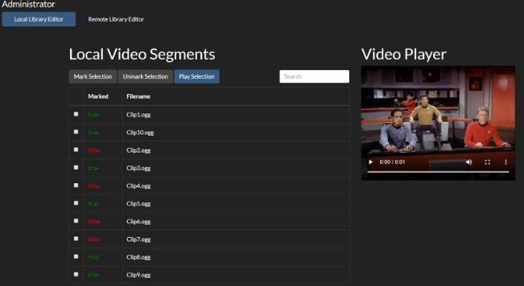
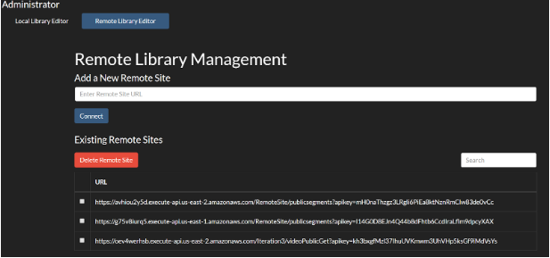
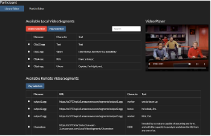
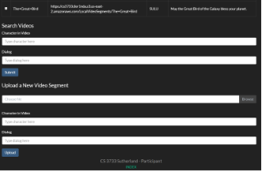
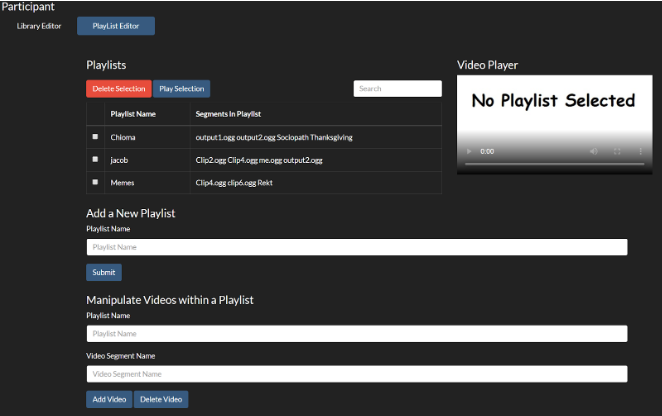

AWS Web Video Player
I worked on a team of four on this application for a software engineering course. We developed it in Java, using Amazon Web Services (AWS) to host and an SQL database to store user data.
The application allows participant users to upload and manage short video clips in their own personal library, as well as create playlists containing those videos. They can also choose to make their playlists publicly available and access public videos in other users' libraries. Administrator users can add/remove sites to gain access to videos from those sites, as well as mark which of their own videos are publicly available.
I worked on implementing the Java backend, writing the functionality that allowed both participant and administrator users to save videos and create/edit their playlists. I also managed the SQL database and coordinated with my teammates whenever our backend needed to access the database.
The application itself is not currently available, since the AWS database has been deactivated to prevent unnecessary costs. Below are some screenshots from the application:
Administrator Library Editor
This is where the administrator can view all the videos collected by remote sites. They can mark/unmark video segments to make them available to participants.
Administrator Site Editor
This is where an administrator could add/remove remote sites, which would provide access to the video segments available on those other remote segments.
Participant Library Editor (1)
This is where a participant can upload, delete or watch video segments from their personal library as well as those from remote sites.
Participant Library Editor (2)
Further down the participant library editor page is where the participant can upload a video segment to their library or search through the video segments currently in the library.
Participant Playlist Editor
This is where a participant can create playlists of video segments in their library.